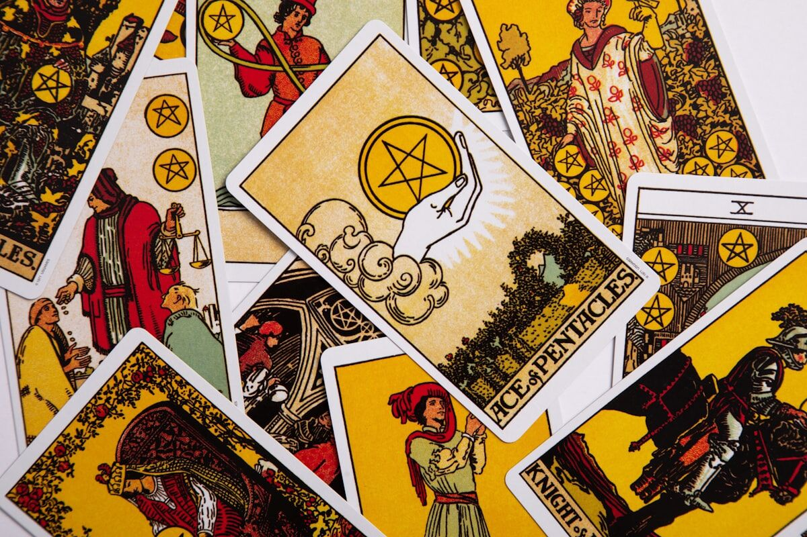
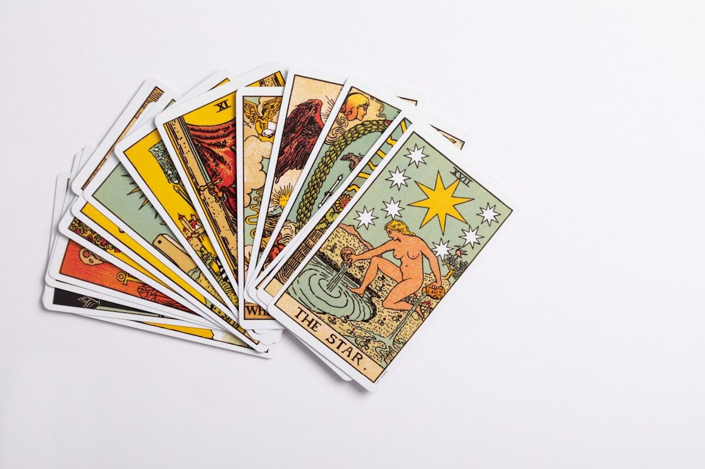

Trusted by thousands of callers nationwide
Love Tarot Reading by Phone — Honest Answers About Your Heart, 24/7
When you can't stop wondering where you really stand, a love tarot reading cuts through the guessing. Every reader on our line is hand-vetted by our master psychics — connect in under 60 seconds. Your first minute is $1 and you can hang up anytime.
- Hand-vetted readers
- Available 24/7
- Hang up anytime

Call and speak with a live reader for a love tarot reading that gets straight to what's really going on between you and the person on your mind. No appointment, no waiting — first-time callers get an introductory rate of $1 per minute, or 15 minutes for $10, and you can hang up the moment you have your answer.

What Is a Love Tarot Reading?
A love tarot reading uses the cards to look honestly at your romantic life — the connection between you and a specific person, where things are heading, what's quietly blocking it, and what you can actually do about it. The reader shuffles and lays out cards from a 78-card deck, then interprets them in the context of the question you bring. It isn't fortune-telling theater. At its best it's a mirror: it shows you the energy and patterns around your situation so you can stop spinning and start moving.
How Does a Love Tarot Reading Work by Phone?
Your reader pulls and interprets the cards on their end while tuning into your energy through your voice and your intention. The tarot responds to focus, not to physical proximity — so a phone love tarot reading is every bit as clear as sitting across a table. You describe what's happening, your reader asks a question or two to sharpen the focus, lays the spread, and walks you through what each position is saying about you, the other person, and the path between you.
What Questions Should I Ask in a Love Tarot Reading?
The question you ask shapes the answer you get. Open-ended "what" and "how" questions almost always give you more than yes-or-no ones, because they hand you something to act on instead of a verdict to wait on. Try framings like these:
"What do I need to know about this connection right now?"
Surfaces the real dynamic, not the story you've been telling yourself.
"How can I move things forward with this person?"
Points to concrete next steps instead of waiting.
"What's blocking us from getting closer?"
Names the obstacle so you can finally address it.
"What is this relationship here to teach me?"
Reframes pain as direction.
"What does my person feel but isn't saying?"
Reads the energy behind the silence.
"What do I need to release to be ready for love?"
Clears the way for what's next.
Who Is the Best Love Tarot Reader to Call?
The best reader for you is one who is genuinely intuitive, gives it to you straight, and treats your situation with care instead of dressing it up. Every reader on our line is hand-vetted by our master psychics, so you're not gambling on a stranger from a directory. When you call, tell us what you're working through and we'll match you with the reader whose strength is love and relationships — usually in under 60 seconds. If the connection doesn't feel right, you can hang up anytime, and our 100% satisfaction promise stands behind the call.
What Do I Do If the Cards Aren't What I Hoped?
First — breathe. A difficult card is information, not a sentence. Tarot describes the energy in motion right now, and energy moves the moment you do something different. A reading that shows distance, hesitation, or a block is actually a gift: it tells you exactly where to put your attention. A skilled reader won't leave you with bad news and a dial tone — they'll walk you through what's driving it and what you can change. If your reader senses the issue runs deeper than this one connection, they may suggest a broader psychic love reading to look at the full pattern.
Common Love Situations a Tarot Reading Can Help With
Callers reach for a love tarot reading at almost every chapter of a relationship. Some of the most common:
"Does my ex still think about me?"
Read the current energy and the most likely direction.
"Is this person being honest with me?"
See what's underneath the words.
"Should I keep waiting or walk away?"
Clarity on what you're actually waiting for.
"Why do I keep attracting the same partner?"
Name the pattern so you can break it.
"Is someone new coming?"
What the cards say about timing and openness.
"Are we in a soulmate or a lesson?"
Understand what this bond really is.
Love Tarot Cards and What They Often Mean
No single card "means" your relationship is over or destined — meaning depends on position, surrounding cards, and your question. That said, a few cards come up often in love readings. The Lovers points to a meaningful choice and genuine alignment. The Two of Cups is mutual connection and partnership. The Three of Swords names heartbreak that's ready to be felt and healed. The Tower signals sudden, clearing change. The Star is hope and renewal after a hard stretch. The Ten of Cups is emotional fulfillment and a settled home. Your reader weaves these together — the cards tell a story, never a one-word answer. You can explore the broader history and symbolism of the tarot if you're curious how the deck developed.
Can a Love Tarot Reading Tell Me If My Ex Will Come Back?
It can show you the honest state of things — what each of you is feeling, what's pulling you together or apart, and the direction the energy is trending if nothing changes. What it can't do is hand you a guaranteed yes, because the future bends with the choices you both make from here. A reader worth your time will give you the real picture, including the part you may not want to hear, plus what would actually shift it. That's far more useful than a comforting promise that leaves you exactly where you started.
Love Tarot Reading vs. Psychic Love Reading vs. Relationship Reading
These overlap, but each leads with a different tool. A love tarot reading uses the structured language of the cards to map your situation. A psychic love reading leads with the reader's direct intuition about you and your person. A relationship reading zooms out to the long-term health and direction of a partnership. Many callers start with tarot for a clear, concrete read, then go deeper from there.
How to Prepare for Your Love Tarot Reading
Find a quiet spot, take a few slow breaths, and settle on one or two real questions before you dial — vague worry in, vague answer out. Have the person's first name in mind if there is one. Stay open rather than fishing for one specific answer; the most useful readings are the ones you let surprise you. And remember the practical part: first-time callers pay $1 per minute, you can do 15 minutes for $10, and you can hang up the second you've got what you came for.
Stop Guessing About Where You Stand
The cards will tell you what your heart already suspects. We'll connect you with the right hand-vetted reader in under 60 seconds. $1/min first call · 15 minutes for $10 · hang up anytime · 100% satisfaction promise.
Call (888) 920-6662 NowWhat Callers Say About Their Love Tarot Reading
"I called convinced I already knew the answer. The cards said something I hadn't considered — and a week later it played out almost exactly the way she described. I felt steady for the first time in months."
"No sugar-coating, no runaround. He told me what the cards showed about my ex and what I needed to let go of. Hard to hear, exactly what I needed."
Explore every reading type on our phone psychic readings hub, or go deeper with a psychic love reading.
Love Tarot Reading — Frequently Asked Questions
What is a love tarot reading?
It uses the cards to explore your romantic life — your connection with a specific person, where it's heading, what's blocking it, and what you can do about it.
What questions should I ask in a love tarot reading?
Open-ended "what" and "how" questions, like "What do I need to know about this connection?" — they give you guidance you can act on instead of a flat yes or no.
Can it tell me if my ex will come back?
It shows the current energy and the most likely direction — but the future shifts with the choices you both make. Expect an honest read, not a guaranteed promise.
Does a love tarot reading work over the phone?
Yes. Your reader pulls the cards on their end and connects through your voice and intention; distance doesn't affect accuracy.
How much does it cost?
First-time callers pay $1/min, or 15 minutes for $10. Returning callers pay the per-minute rate, and you can hang up anytime.
Is a love tarot reading accurate?
It reflects the energy and patterns around you now. It's most accurate as honest insight and direction, and the clearer your question, the clearer the answer.
Do I need to know the other person's birthday?
No. A first name and your honest question are plenty — the reading works from your energy and focus.
How often should I get a love tarot reading?
When something genuinely shifts — a turning point, a decision, a fresh start. Reading the same question on repeat usually muddies it rather than clarifies it.
Get Your Love Tarot Reading Now
Here's what happens when you call: you're connected to a hand-vetted reader in under 60 seconds, they pull the cards on your situation, and you hang up knowing exactly where you stand.
- Hand-vetted reader
- Connected in under 60 seconds
- $1/min first call · 15 min for $10
- Hang up anytime
- 100% satisfaction promise